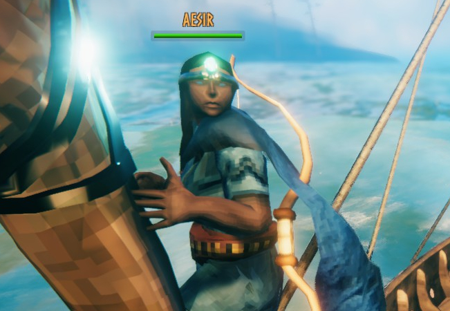

Valheim : Four Warriors
AESIR

발헤임의 플레이어블 캐릭터 중 하나. 플레이어는 아이님. 주 무기는 활과 폴암, 뿔 분쇄기.
전투와 탐험 등 롤플레잉 특화형 캐릭터. 특히, 전투에서는 넉백 위주의 무기 활용으로 팀원 보조가 특징.
하지만 생존을 위한 거점 운영이 필수적인 발헤임 특성 상 나무나 베리, 사냥감 조달 등 돌쇠 역할을 자주 맡는다.
별다른 모션이 없는 것이 불만으로, 주먹질과 발차기로 인사를 대체하여 원성을 자주 산다.